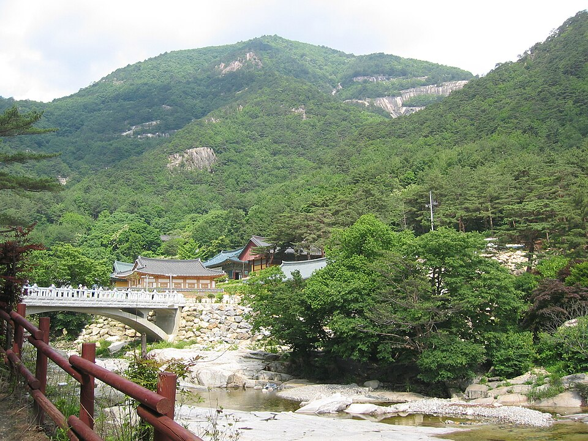

동해 검정고시 — 합격증을 받은 다음, 무엇으로 이어지나

상담을 하다 보면 합격까지만 생각하고 오시는 분이 많습니다. 그런데 합격증 자체가 목적인 경우는 거의 없습니다. 그 뒤에 하고 싶은 일이 있어서 시작하신 겁니다. 그리고 그 “뒤에 할 일”이 무엇이냐에 따라 지금 공부해야 할 것이 달라집니다. 동해 검정고시를 준비하신다면, 시작 전에 이 부분을 한 번 정리하고 가시길 권합니다.
합격증이 실제로 쓰이는 자리는 세 갈래입니다
고졸 검정고시에 합격하면 고등학교 졸업자와 같은 학력으로 인정됩니다. 이 학력이 실제로 필요해지는 자리는 크게 셋입니다.
- 취업 — 지원 자격에 “고졸 이상”이 걸려 있는 자리에 넣을 수 있게 됩니다.
- 자격증 — 응시 자격에 학력 조건이 있는 시험에 접근할 수 있게 됩니다.
- 진학 — 대학 입시에 지원할 수 있는 자격이 생깁니다.
세 갈래 중 어디로 갈지에 따라 준비의 무게가 완전히 달라집니다. 취업이나 자격증이 목적이면 합격선을 넘기는 것이 목표입니다. 진학이 목적이면 점수 자체가 자료로 쓰이므로 더 올려 두는 쪽이 유리합니다. 같은 시험인데 목표 점수가 다른 겁니다.
자격증을 생각한다면, 응시 자격부터 확인하세요
자격증은 종류마다 응시 조건이 다릅니다. 학력 제한이 아예 없는 것도 있고, 일정 학력이나 경력을 요구하는 것도 있습니다. 그래서 “고졸이 되면 다 된다”고 뭉뚱그려 생각하지 않는 편이 좋습니다.
확인하는 방법은 간단합니다. 관심 있는 자격증 이름을 정하고, 해당 시험을 시행하는 기관의 공식 안내에서 응시 자격을 직접 읽는 것입니다. 여기서 “고졸 학력이 필요하다”가 확인되면, 검정고시는 그 조건을 채우는 수단이 됩니다. 조건이 원래 없었다면 굳이 순서를 기다릴 필요도 없습니다. 이 확인은 공부를 시작하기 전에 해야 합니다. 목표가 흐릿하면 공부도 흐릿해집니다.
취업이 목적이면 ‘언제까지’가 중요합니다
지원하고 싶은 자리가 있는데 마감이 정해져 있다면, 그 시점까지 합격증이 나올 수 있는지를 역산해야 합니다. 시험을 보고 결과가 나오기까지는 시간이 걸리고, 서류에 넣을 수 있는 증명서는 그 뒤에 발급됩니다.
이 계산을 안 하고 시작하면, 합격은 했는데 원하던 자리는 이미 지나가 버리는 일이 생깁니다. 구체적인 시험 일정과 발표 시점은 해마다 다르니, 뉴스 첫 화면의 일정 안내에서 확인해 주세요. 그 일정에 맞춰 “몇 과목을 이번에 볼지”를 정하면 계획이 훨씬 선명해집니다.
목표가 정해지면 과목 순서도 정해집니다
검정고시는 60점을 넘긴 과목이 과목 합격으로 남습니다. 그래서 한 번에 다 볼 필요가 없습니다. 목표가 무엇이냐에 따라 먼저 손댈 과목이 달라집니다.
- 취업·자격증이 목적 — 빨리 끝나는 과목부터 확실히 합격시켜 부담을 줄입니다. 오래 걸리는 과목은 다음 회차로 넘깁니다.
- 진학이 목적 — 시간이 걸려도 점수가 올라가는 과목에 먼저 시간을 씁니다. 나중에 다시 올리기가 어렵기 때문입니다.
이 두 방향은 첫 달의 시간표부터 달라집니다. 그래서 목표를 먼저 정하시라고 말씀드리는 겁니다.
동해에서 이렇게 함께합니다
저희는 1:1 맞춤 과외라 상담 때 목표부터 확인합니다. 취업·자격증이 목적인 분과 진학이 목적인 분에게 같은 계획을 드리지 않습니다. 목표가 아직 정해지지 않았다면 그것부터 같이 정리합니다. 동해시와 인근 지역은 방문 수업이 가능하고, 이동이 부담되거나 근무 시간이 불규칙하면 화상(줌) 수업으로 집에서 그대로 진행합니다.